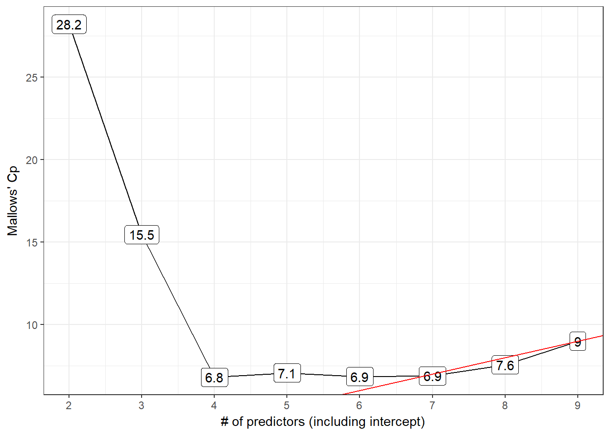

Chapter 8 “Best Subsets” Variable Selection in our Prostate Cancer Study
A second approach to model selection involved fitting all possible subset models and identifying the ones that look best according to some meaningful criterion and ideally one that includes enough variables to model the response appropriately without including lots of redundant or unnecessary terms.
8.1 Four Key Summaries We’ll Use to Evaluate Potential Models
- Adjusted R2, which we try to maximize.
- Akaike’s Information Criterion (AIC), which we try to minimize, and a Bias-Corrected version of AIC due to Hurvich and Tsai (1989), which we use when the sample size is small, specifically when the sample size \(n\) and the number of predictors being studied \(k\) are such that \(n/k \leq 40\). We also try to minimize this bias-corrected AIC.
- Bayesian Information Criterion (BIC), which we also try to minimize.
- Mallows’ Cp statistic, which we (essentially) try to minimize.
Choosing between AIC and BIC can be challenging.
For model selection purposes, there is no clear choice between AIC and BIC. Given a family of models, including the true model, the probability that BIC will select the correct model approaches one as the sample size n approaches infinity - thus BIC is asymptotically consistent, which AIC is not. [But, for practical purposes,] BIC often chooses models that are too simple [relative to AIC] because of its heavy penalty on complexity.
- Source: Hastie, Tibshriani, and Frideman (2001), page 208.
Several useful tools for running “all subsets” or “best subsets” regression comparisons are developed in R’s leaps package.
8.2 Using regsubsets in the leaps package
We can use the leaps package to obtain results in the prost study from looking at all possible subsets of the candidate predictors. The leaps package isn’t particularly friendly to the tidyverse. In particular, we cannot have any character variables in our predictor set. We specify our “kitchen sink” model, and apply the regsubsets function from leaps, which identifies the set of models.
To start, we’ll ask R to find the one best subset (with 1 predictor variable [in addition to the intercept], then with 2 predictors, and then with each of 3, 4, … 8 predictor variables) according to an exhaustive search without forcing any of the variables to be in or out.
- Use the
nvmaxcommand within theregsubsetsfunction to limit the number of regression inputs to a maximum. - Use the
nbestcommand to identify how many subsets you want to identify for each predictor count. - If all of your predictors are quantitative or binary then you can skip the
predsstep, and simply place your kitchen sink model intoregsubsets. - But if you have multi-categorical variables (like
gleason_forsvi_fin our case) then you must create apredsgroup, as follows.
preds <- with(prost, cbind(lcavol, lweight, age, bph_f,
svi_f, lcp, gleason_f, pgg45))
rs.ks <- regsubsets(preds, y = prost$lpsa,
nvmax = 8, nbest = 1)
rs.summ <- summary(rs.ks)
rs.summSubset selection object
8 Variables (and intercept)
Forced in Forced out
lcavol FALSE FALSE
lweight FALSE FALSE
age FALSE FALSE
bph_f FALSE FALSE
svi_f FALSE FALSE
lcp FALSE FALSE
gleason_f FALSE FALSE
pgg45 FALSE FALSE
1 subsets of each size up to 8
Selection Algorithm: exhaustive
lcavol lweight age bph_f svi_f lcp gleason_f pgg45
1 ( 1 ) "*" " " " " " " " " " " " " " "
2 ( 1 ) "*" "*" " " " " " " " " " " " "
3 ( 1 ) "*" "*" " " " " "*" " " " " " "
4 ( 1 ) "*" "*" " " "*" "*" " " " " " "
5 ( 1 ) "*" "*" "*" "*" "*" " " " " " "
6 ( 1 ) "*" "*" "*" "*" "*" " " "*" " "
7 ( 1 ) "*" "*" "*" "*" "*" "*" "*" " "
8 ( 1 ) "*" "*" "*" "*" "*" "*" "*" "*" So…
- the best one-predictor model used
lcavol - the best two-predictor model used
lcavolandlweight - the best three-predictor model used
lcavol,lweightandsvi_f - the best four-predictor model added
bph_f, and - the best five-predictor model added
age - the best six-input model added
gleason_f, - the best seven-input model added
lcp, - and the eight-input model adds
pgg45.
All of these “best subsets” are hierarchical, in that each model is a subset of the one below it. This isn’t inevitably true.
- To determine which model is best, we can plot key summaries of model fit (adjusted R2, Mallows’ \(C_p\), bias-corrected AIC, and BIC) using either base R plotting techniques (what I’ve done in the past) or
ggplot2(what I use now.) I’ll show both types of plotting approaches in the next two sections.
8.2.1 Identifying the models with which and outmat
To see the models selected by the system, we use:
rs.summ$which (Intercept) lcavol lweight age bph_f svi_f lcp gleason_f pgg45
1 TRUE TRUE FALSE FALSE FALSE FALSE FALSE FALSE FALSE
2 TRUE TRUE TRUE FALSE FALSE FALSE FALSE FALSE FALSE
3 TRUE TRUE TRUE FALSE FALSE TRUE FALSE FALSE FALSE
4 TRUE TRUE TRUE FALSE TRUE TRUE FALSE FALSE FALSE
5 TRUE TRUE TRUE TRUE TRUE TRUE FALSE FALSE FALSE
6 TRUE TRUE TRUE TRUE TRUE TRUE FALSE TRUE FALSE
7 TRUE TRUE TRUE TRUE TRUE TRUE TRUE TRUE FALSE
8 TRUE TRUE TRUE TRUE TRUE TRUE TRUE TRUE TRUEAnother version of this formatted for printing is:
rs.summ$outmat lcavol lweight age bph_f svi_f lcp gleason_f pgg45
1 ( 1 ) "*" " " " " " " " " " " " " " "
2 ( 1 ) "*" "*" " " " " " " " " " " " "
3 ( 1 ) "*" "*" " " " " "*" " " " " " "
4 ( 1 ) "*" "*" " " "*" "*" " " " " " "
5 ( 1 ) "*" "*" "*" "*" "*" " " " " " "
6 ( 1 ) "*" "*" "*" "*" "*" " " "*" " "
7 ( 1 ) "*" "*" "*" "*" "*" "*" "*" " "
8 ( 1 ) "*" "*" "*" "*" "*" "*" "*" "*" We built one subset of each size up to eight predictors, and if we add the intercept term, this means we have models of size k = 2, 3, 4, 5, 6, 7, 8 and 9.
The models are:
| Size k | Predictors included (besides intercept) |
|---|---|
| 2 | lcavol |
| 3 | lcavol and lweight |
| 4 | add svi_f |
| 5 | add bph_f |
| 6 | add age |
| 7 | add gleason_f |
| 8 | add lcp |
| 9 | add pgg45 |
8.3 Calculating bias-corrected AIC
The bias-corrected AIC formula developed in Hurvich and Tsai (1989) requires three inputs:
- the residual sum of squares for a model
- the sample size (n) or number of observations used to fit the model
- the number of regression inputs, k, including the intercept, used in the model
So, for a particular model fit to n observations, on k predictors (including the intercept) and a residual sum of squares equal to RSS, we have:
\[ AIC_c = n log(\frac{RSS}{n}) + 2k + \frac{2k (k+1)}{n-k-1} \]
Note that the corrected \(AIC_c\) can be related to the original AIC via:
\[ AIC_c = AIC + \frac{2k (k+1)}{n - k - 1} \]
8.3.1 Calculation of aic.c in our setting
In our case, we have \(n\) = 97 observations, and built a series of models with \(k\) = 2:9 predictors (including the intercept in each case), so we will insert those values into the general formula for bias-corrected AIC which is:
aic.c <- n * log( rs.summ$rss / n) + 2 * k +
(2 * k * (k + 1) / (n - k - 1))We can obtain the residual sum of squares explained by each model by pulling rss from the regsubsets summary contained here in rs.summ.
data_frame(k = 2:9, RSS = rs.summ$rss)# A tibble: 8 x 2
k RSS
<int> <dbl>
1 2 58.9
2 3 51.7
3 4 46.6
4 5 45.7
5 6 44.6
6 7 43.7
7 8 43.0
8 9 42.8In this case, we have:
rs.summ$aic.c <- 97*log(rs.summ$rss / 97) + 2*(2:9) +
(2 * (2:9) * ((2:9)+1) / (97 - (2:9) - 1))
round(rs.summ$aic.c,2) # bias-corrected[1] -44.24 -54.70 -62.74 -62.29 -62.34 -62.11 -61.17 -59.36The impact of this bias correction can be modest but important. Here’s a little table looking closely at the results in this problem. The uncorrected AIC are obtained using extractAIC, as described in the next section.
| Size | 2 | 3 | 4 | 5 | 6 | 7 | 8 | 9 |
|---|---|---|---|---|---|---|---|---|
| Bias-corrected AIC | -44.2 | -54.7 | -62.7 | -62.3 | -62.3 | -62.1 | -61.2 | -59.4 |
| Uncorrected AIC | -44.4 | -55.0 | -63.2 | -62.4 | -63.4 | -63.0 | -62.4 | -61.4 |
8.3.2 The Uncorrected AIC provides no more useful information here
We could, if necessary, also calculate the uncorrected AIC value for each model, but we won’t make any direct use of that, because that will not provide any new information not already gathered by the \(C_p\) statistic for a linear regression model. If you wanted to find the uncorrected AIC for a given model, you can use the extractAIC function.
extractAIC(lm(lpsa ~ lcavol, data = prost))[1] 2.00000 -44.36603extractAIC(lm(lpsa ~ lcavol + lweight, data = prost))[1] 3.00000 -54.95846Note that:
- these results are fairly comparable to the bias-corrected AIC we built above, and
- the
extractAICandAICfunctions look like they give very different results, but they really don’t.
AIC(lm(lpsa ~ lcavol, data = prost))[1] 232.908AIC(lm(lpsa ~ lcavol + lweight, data = prost))[1] 222.3156But notice that the differences in AIC are the same, either way, comparing these two models:
extractAIC(lm(lpsa ~ lcavol, data = prost)) - extractAIC(lm(lpsa ~ lcavol + lweight, data = prost))[1] -1.00000 10.59243AIC(lm(lpsa ~ lcavol, data = prost)) - AIC(lm(lpsa ~ lcavol + lweight, data = prost))[1] 10.59243- AIC is only defined up to an additive constant.
- Since the difference between two models using either
AICorextractAICis the same, this doesn’t actually matter which one we use, so long as we use the same one consistently.
8.3.3 Building a Tibble containing the necessary information
Again, note the use of 2:9 for the values of \(k\), because we’re fitting one model for each size from 2 through 9.
best_mods_1 <- data_frame(
k = 2:9,
r2 = rs.summ$rsq,
adjr2 = rs.summ$adjr2,
cp = rs.summ$cp,
aic.c = rs.summ$aic.c,
bic = rs.summ$bic
)
best_mods <- cbind(best_mods_1, rs.summ$which)
best_mods k r2 adjr2 cp aic.c bic (Intercept) lcavol
1 2 0.5394320 0.5345839 28.213914 -44.23838 -66.05416 TRUE TRUE
2 3 0.5955040 0.5868977 15.456669 -54.70040 -74.07188 TRUE TRUE
3 4 0.6359499 0.6242063 6.811986 -62.74265 -79.71614 TRUE TRUE
4 5 0.6425479 0.6270065 7.075509 -62.29223 -76.91557 TRUE TRUE
5 6 0.6509970 0.6318211 6.851826 -62.33858 -74.66120 TRUE TRUE
6 7 0.6584484 0.6356783 6.890739 -62.10692 -72.17992 TRUE TRUE
7 8 0.6634967 0.6370302 7.562119 -61.17338 -69.04961 TRUE TRUE
8 9 0.6656326 0.6352355 9.000000 -59.35841 -65.09253 TRUE TRUE
lweight age bph_f svi_f lcp gleason_f pgg45
1 FALSE FALSE FALSE FALSE FALSE FALSE FALSE
2 TRUE FALSE FALSE FALSE FALSE FALSE FALSE
3 TRUE FALSE FALSE TRUE FALSE FALSE FALSE
4 TRUE FALSE TRUE TRUE FALSE FALSE FALSE
5 TRUE TRUE TRUE TRUE FALSE FALSE FALSE
6 TRUE TRUE TRUE TRUE FALSE TRUE FALSE
7 TRUE TRUE TRUE TRUE TRUE TRUE FALSE
8 TRUE TRUE TRUE TRUE TRUE TRUE TRUE8.4 Plotting the Best Subsets Results using ggplot2
8.4.1 The Adjusted R2 Plot
p1 <- ggplot(best_mods, aes(x = k, y = adjr2,
label = round(adjr2,2))) +
geom_line() +
geom_label() +
geom_label(data = subset(best_mods,
adjr2 == max(adjr2)),
aes(x = k, y = adjr2, label = round(adjr2,2)),
fill = "yellow", col = "blue") +
theme_bw() +
scale_x_continuous(breaks = 2:9) +
labs(x = "# of predictors (including intercept)",
y = "Adjusted R-squared")
p1
Models 4-9 all look like reasonable choices here. The maximum adjusted R2 is seen in the model of size 8.
8.4.2 Mallows’ \(C_p\)
The \(C_p\) statistic focuses directly on the tradeoff between bias (due to excluding important predictors from the model) and extra variance (due to including too many unimportant predictors in the model.)
If N is the sample size, and we select \(p\) regression predictors from a set of \(K\) (where \(p < K\)), then the \(C_p\) statistic is
\(C_p = \frac{SSE_p}{MSE_K} - N + 2p\)
where:
- \(SSE_p\) is the sum of squares for error (residual) in the model with \(p\) predictors
- \(MSE_K\) is the residual mean square after regression in the model with all \(K\) predictors
As it turns out, this is just measuring the particular model’s lack of fit, and then adding a penalty for the number of terms in the model (specifically \(2p - N\) is the penalty since the lack of fit is measured as \((N-p) \frac{SSE_p}{MSE_K}\).
- If a model has no meaningful lack of fit (i.e. no substantial bias) then the expected value of \(C_p\) is roughly \(p\).
- Otherwise, the expectation is \(p\) plus a positive bias term.
- In general, we want to see smaller values of \(C_p\).
- We usually select a “winning model” by choosing a subset of predictors that have \(C_p\) near the value of \(p\).
8.4.3 The \(C_p\) Plot
The \(C_p\) plot is just a scatterplot of \(C_p\) on the Y-axis, and the size of the model (coefficients plus intercept) \(p = k\) on the X-axis.
Each of the various predictor subsets we will study is represented in a single point. A model without bias should have \(C_p\) roughly equal to \(p\), so we’ll frequently draw a line at \(C_p = p\) to make that clear. We then select our model from among all models with small \(C_p\) statistics.
- My typical approach is to identify the models where \(C_p - p \geq 0\), then select from among those models the model where \(C_p - p\) is minimized, and if there is a tie, select the model where \(p\) is minimized.
- Another good candidate might be a slightly overfit model (where \(C_p - p < 0\) but just barely.)
p2 <- ggplot(best_mods, aes(x = k, y = cp,
label = round(cp,1))) +
geom_line() +
geom_label() +
geom_abline(intercept = 0, slope = 1,
col = "red") +
theme_bw() +
scale_x_continuous(breaks = 2:9) +
labs(x = "# of predictors (including intercept)",
y = "Mallows' Cp")
p2
- Model 6 is a possibility here, with the difference \(C_p - p\) minimized among all models with \(C_p >= p\).
- Model 7 also looks pretty good, with Cp just barely smaller than the size (p = 7) of the model.
8.4.4 “All Subsets” Regression and Information Criteria
We might consider any of three main information criteria:
- the Bayesian Information Criterion, called BIC
- the Akaike Information Criterion (used by R’s default stepwise approaches,) called AIC
- a corrected version of AIC due to Hurvich and Tsai (1989), called AICc or
aic.c
Each of these indicates better models by getting smaller. Since the \(C_p\) and AIC results will lead to the same model, I’ll focus on plotting the bias-corrected AIC and on BIC.
8.4.5 The bias-corrected AIC plot
p3 <- ggplot(best_mods, aes(x = k, y = aic.c,
label = round(aic.c,1))) +
geom_line() +
geom_label() +
geom_label(data = subset(best_mods, aic.c == min(aic.c)),
aes(x = k, y = aic.c), fill = "pink",
col = "red") +
theme_bw() +
scale_x_continuous(breaks = 2:9) +
labs(x = "# of predictors (including intercept)",
y = "Bias-Corrected AIC")
p3
The smallest AICc values occur in models 4 and later, especially model 4 itself.
8.4.6 The BIC plot
p4 <- ggplot(best_mods, aes(x = k, y = bic,
label = round(bic,1))) +
geom_line() +
geom_label() +
geom_label(data = subset(best_mods, bic == min(bic)),
aes(x = k, y = bic),
fill = "lightgreen", col = "blue") +
theme_bw() +
scale_x_continuous(breaks = 2:9) +
labs(x = "# of predictors (including intercept)",
y = "BIC")
p48.4.7 All Four Plots in One Figure (via ggplot2)
gridExtra::grid.arrange(p1, p2, p3, p4, nrow = 2)8.5 Table of Key Results
We can build a big table, like this:
best_mods k r2 adjr2 cp aic.c bic (Intercept) lcavol
1 2 0.5394320 0.5345839 28.213914 -44.23838 -66.05416 TRUE TRUE
2 3 0.5955040 0.5868977 15.456669 -54.70040 -74.07188 TRUE TRUE
3 4 0.6359499 0.6242063 6.811986 -62.74265 -79.71614 TRUE TRUE
4 5 0.6425479 0.6270065 7.075509 -62.29223 -76.91557 TRUE TRUE
5 6 0.6509970 0.6318211 6.851826 -62.33858 -74.66120 TRUE TRUE
6 7 0.6584484 0.6356783 6.890739 -62.10692 -72.17992 TRUE TRUE
7 8 0.6634967 0.6370302 7.562119 -61.17338 -69.04961 TRUE TRUE
8 9 0.6656326 0.6352355 9.000000 -59.35841 -65.09253 TRUE TRUE
lweight age bph_f svi_f lcp gleason_f pgg45
1 FALSE FALSE FALSE FALSE FALSE FALSE FALSE
2 TRUE FALSE FALSE FALSE FALSE FALSE FALSE
3 TRUE FALSE FALSE TRUE FALSE FALSE FALSE
4 TRUE FALSE TRUE TRUE FALSE FALSE FALSE
5 TRUE TRUE TRUE TRUE FALSE FALSE FALSE
6 TRUE TRUE TRUE TRUE FALSE TRUE FALSE
7 TRUE TRUE TRUE TRUE TRUE TRUE FALSE
8 TRUE TRUE TRUE TRUE TRUE TRUE TRUE8.6 Models Worth Considering?
| \(k\) | Predictors | Reason |
|---|---|---|
| 4 | lcavol lweight svi_f |
minimizes BIC, AICc |
| 7 | + age bph_f gleason_f |
\(C_p\) near p |
| 8 | + lcp |
max \(R^2_{adj}\) |
8.7 Compare these candidate models in-sample?
8.7.1 Using anova to compare nested models
Let’s run an ANOVA-based comparison of these nested models to each other and to the model with the intercept alone.
- The models are nested because
m04is a subset of the predictors inm07, which includes a subset of the predictors inm08.
m.int <- lm(lpsa ~ 1, data = prost)
m04 <- lm(lpsa ~ lcavol + lweight + svi_f, data = prost)
m07 <- lm(lpsa ~ lcavol + lweight + svi_f +
age + bph_f + gleason_f, data = prost)
m08 <- lm(lpsa ~ lcavol + lweight + svi_f +
age + bph_f + gleason_f + lcp, data = prost)
m.full <- lm(lpsa ~ lcavol + lweight + svi_f +
age + bph_f + gleason_f + lcp + pgg45, data = prost)Next, we’ll run…
anova(m.full, m08, m07, m04, m.int)Analysis of Variance Table
Model 1: lpsa ~ lcavol + lweight + svi_f + age + bph_f + gleason_f + lcp +
pgg45
Model 2: lpsa ~ lcavol + lweight + svi_f + age + bph_f + gleason_f + lcp
Model 3: lpsa ~ lcavol + lweight + svi_f + age + bph_f + gleason_f
Model 4: lpsa ~ lcavol + lweight + svi_f
Model 5: lpsa ~ 1
Res.Df RSS Df Sum of Sq F Pr(>F)
1 86 41.057
2 87 41.498 -1 -0.441 0.9234 0.3393
3 88 42.066 -1 -0.568 1.1891 0.2786
4 93 46.568 -5 -4.503 1.8863 0.1050
5 96 127.918 -3 -81.349 56.7991 <2e-16 ***
---
Signif. codes: 0 '***' 0.001 '**' 0.01 '*' 0.05 '.' 0.1 ' ' 1What conclusions can we draw here, on the basis of these ANOVA tests?
- The first p value, of 0.3393, compares what the
anovacalled Model 1, and what we callm.fullto what theanovacalled Model 2, and what we callm08. So there’s no significant decline in predictive value observed when we drop from them.fullmodel to them08model. This suggests that them08model may be a better choice. - The second p value, of 0.2786, compares
m08tom07, and suggests that we lose no significant predictive value by dropping down tom07. - The third p value, of 0.1050, compares
m07tom04, and suggests that we lose no significant predictive value by dropping down tom04. - But the fourth p value, of 2e-16 (or, functionally, zero), compares
m04tom.intand suggests that we do gain significant predictive value by including the predictors inm04as compared to a model with an intercept alone. - So, by the significance tests, the model we’d select would be
m04, but, of course, in-sample statistical significance alone isn’t a good enough reason to select a model if we want to do prediction well.
8.8 AIC and BIC comparisons, within the training sample
Next, we’ll compare the three candidate models (ignoring the intercept-only and kitchen sink models) in terms of their AIC values and BIC values, again using the same sample we used to fit the models in the first place.
AIC(m04, m07, m08) df AIC
m04 5 214.0966
m07 10 214.2327
m08 11 214.9148BIC(m04, m07, m08) df BIC
m04 5 226.9702
m07 10 239.9798
m08 11 243.2366- The model with the smallest AIC value shows the best performance within the sample on that measure.
- Similarly, smaller BIC values are associated with predictor sets that perform better in sample on that criterion.
- BIC often suggests smaller models (with fewer regression inputs) than does AIC. Does that happen in this case?
- Note that
AICandBICcan be calculated in a few different ways, so we may see some variation if we don’t compare apples to apples with regard to the R functions involved.
8.9 Cross-Validation of Candidate Models out of Sample
8.9.1 20-fold Cross-Validation of model m04
Model m04 uses lcavol, lweight and svi_f to predict the lpsa outcome. Let’s do 20-fold cross-validation of this modeling approach, and calculate the root mean squared prediction error and the mean absolute prediction error for that modeling scheme.
set.seed(43201)
cv_m04 <- prost %>%
crossv_kfold(k = 20) %>%
mutate(model = map(train,
~ lm(lpsa ~ lcavol + lweight + svi_f,
data = .)))
cv_m04_pred <- cv_m04 %>%
unnest(map2(model, test, ~ augment(.x, newdata = .y)))
cv_m04_results <- cv_m04_pred %>%
summarize(Model = "m04",
RMSE = sqrt(mean((lpsa - .fitted) ^2)),
MAE = mean(abs(lpsa - .fitted)))
cv_m04_results# A tibble: 1 x 3
Model RMSE MAE
<chr> <dbl> <dbl>
1 m04 0.725 0.5748.9.2 20-fold Cross-Validation of model m07
Model m07 uses lcavol, lweight, svi_f, age, bph_f, and gleason_f to predict the lpsa outcome. Let’s now do 20-fold cross-validation of this modeling approach, and calculate the root mean squared prediction error and the mean absolute prediction error for that modeling scheme. Note the small changes required, as compared to our cross-validation of model m04 a moment ago.
set.seed(43202)
cv_m07 <- prost %>%
crossv_kfold(k = 20) %>%
mutate(model = map(train,
~ lm(lpsa ~ lcavol + lweight +
svi_f + age + bph_f +
gleason_f,
data = .)))
cv_m07_pred <- cv_m07 %>%
unnest(map2(model, test, ~ augment(.x, newdata = .y)))
cv_m07_results <- cv_m07_pred %>%
summarize(Model = "m07",
RMSE = sqrt(mean((lpsa - .fitted) ^2)),
MAE = mean(abs(lpsa - .fitted)))
cv_m07_results# A tibble: 1 x 3
Model RMSE MAE
<chr> <dbl> <dbl>
1 m07 0.730 0.5568.9.3 20-fold Cross-Validation of model m08
Model m08 uses lcavol, lweight, svi_f, age, bph_f, gleason_f and lcp to predict the lpsa outcome. Let’s now do 20-fold cross-validation of this modeling approach.
set.seed(43202)
cv_m08 <- prost %>%
crossv_kfold(k = 20) %>%
mutate(model = map(train,
~ lm(lpsa ~ lcavol + lweight +
svi_f + age + bph_f +
gleason_f + lcp,
data = .)))
cv_m08_pred <- cv_m08 %>%
unnest(map2(model, test, ~ augment(.x, newdata = .y)))
cv_m08_results <- cv_m08_pred %>%
summarize(Model = "m08",
RMSE = sqrt(mean((lpsa - .fitted) ^2)),
MAE = mean(abs(lpsa - .fitted)))
cv_m08_results# A tibble: 1 x 3
Model RMSE MAE
<chr> <dbl> <dbl>
1 m08 0.729 0.5578.9.4 Comparing the Results of the Cross-Validations
bind_rows(cv_m04_results, cv_m07_results, cv_m08_results)# A tibble: 3 x 3
Model RMSE MAE
<chr> <dbl> <dbl>
1 m04 0.725 0.574
2 m07 0.730 0.556
3 m08 0.729 0.557It appears that model m04 has the smallest RMSE and MAE in this case. So, that’s the model with the strongest cross-validated predictive accuracy, by these two standards.
8.10 What about Interaction Terms?
Suppose we consider for a moment a much smaller and less realistic problem. We want to use best subsets to identify a model out of a set of three predictors for lpsa: specifically lcavol, age and svi_f, but now we also want to consider the interaction of svi_f with lcavol as a potential addition. Remember that svi is the 1/0 numeric version of svi_f. We could simply add a numerical product term to our model, as follows.
pred2 <- with(prost, cbind(lcavol, age, svi_f, svixlcavol = svi*lcavol))
rs.ks2 <- regsubsets(pred2, y = prost$lpsa,
nvmax = NULL, nbest = 1)
rs.summ2 <- summary(rs.ks2)
rs.summ2Subset selection object
4 Variables (and intercept)
Forced in Forced out
lcavol FALSE FALSE
age FALSE FALSE
svi_f FALSE FALSE
svixlcavol FALSE FALSE
1 subsets of each size up to 4
Selection Algorithm: exhaustive
lcavol age svi_f svixlcavol
1 ( 1 ) "*" " " " " " "
2 ( 1 ) "*" " " "*" " "
3 ( 1 ) "*" " " "*" "*"
4 ( 1 ) "*" "*" "*" "*" In this case, best subsets doesn’t identify the interaction term as an attractive predictor until it has already included the main effects that go into it. So that’s fine. But if that isn’t the case, we would have a problem.
To resolve this, we could:
- Consider interactions beforehand, and force them in if desired.
- Consider interaction terms outside of best subsets, and only after the selection of main effects.
- Use another approach to deal with variable selection for interaction terms.
References
Hurvich, Clifford M., and Chih-Ling Tsai. 1989. “Regression and Time Series Model Selection in Small Samples.” Biometrika 76: 297–307. https://www.stat.berkeley.edu/~binyu/summer08/Hurvich.AICc.pdf.
Hastie, Trevor, Robert Tibshriani, and Jerome H. Frideman. 2001. The Elements of Statistical Learning. New York: Springer.